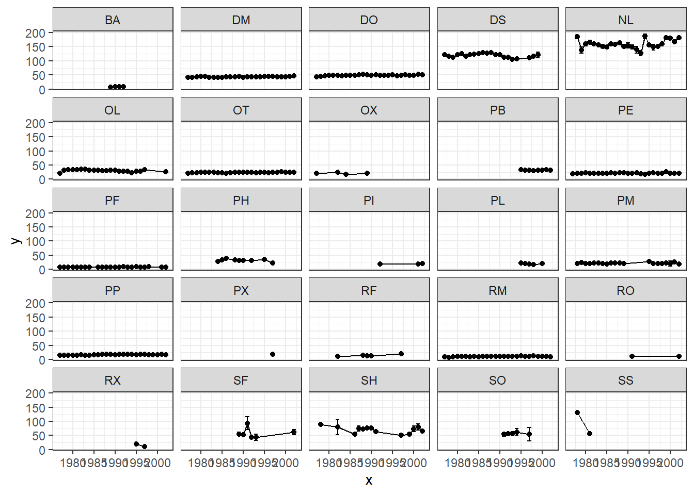
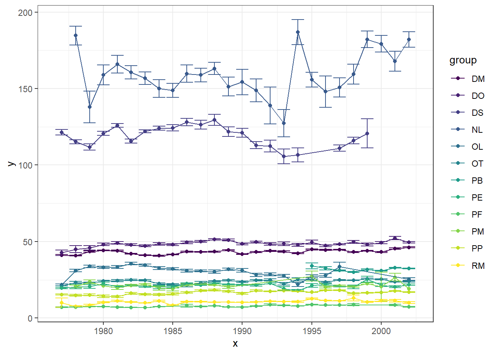

Warning: package 'tidyverse' was built under R version 4.3.3
Warning: package 'ggplot2' was built under R version 4.3.3
Warning: package 'tibble' was built under R version 4.3.3
Warning: package 'tidyr' was built under R version 4.3.3
Warning: package 'readr' was built under R version 4.3.3
Warning: package 'purrr' was built under R version 4.3.3
Warning: package 'dplyr' was built under R version 4.3.3
Warning: package 'stringr' was built under R version 4.3.3
Warning: package 'forcats' was built under R version 4.3.3
Warning: package 'lubridate' was built under R version 4.3.3
── Attaching core tidyverse packages ──────────────────────── tidyverse 2.0.0 ──
✔ dplyr 1.1.4 ✔ readr 2.1.5
✔ forcats 1.0.0 ✔ stringr 1.5.1
✔ ggplot2 3.5.0 ✔ tibble 3.2.1
✔ lubridate 1.9.3 ✔ tidyr 1.3.1
✔ purrr 1.0.2
── Conflicts ────────────────────────────────────────── tidyverse_conflicts() ──
✖ dplyr::filter() masks stats::filter()
✖ dplyr::lag() masks stats::lag()
ℹ Use the conflicted package (<http://conflicted.r-lib.org/>) to force all conflicts to become errors
Code
library(magrittr)
Attaching package: 'magrittr'
The following object is masked from 'package:purrr':
set_names
The following object is masked from 'package:tidyr':
extract
`summarise()` has grouped output by 'species_id'. You can override using the
`.groups` argument.
Mean yearly weight by species
Let’s write a function to simplify plotting these data without having to copy+paste ggplot code
Code
sp_time_plot <-function(df, x, y, error, group, option) {if(option =="overlay") {ggplot(df, aes(x = x, y = y, ymin = y - error, ymax = y + error, colour = group)) +geom_point() +geom_errorbar() +geom_line() + viridis::scale_colour_viridis(discrete =TRUE, option ="D") +theme_bw()}else {ggplot(df, aes(x = x, y = y, ymin = y - error, ymax = y + error, group = group)) +geom_point() +geom_errorbar() +geom_line() +facet_wrap(. ~ species_id) +theme_bw() }}
Now let’s see what these masses look like through time, faceted out:
`geom_line()`: Each group consists of only one observation.
ℹ Do you need to adjust the group aesthetic?

Several of these species don’t really have enough obs through the time series to merit including them. Let’s remove some
Of the 25 rodent species in order, there’s a jump from n = 141 to n = 876, feels like a natural breakpoint between “common” and not. And leaves us 12 species with a lot of values, let’s focus on them and see what the plots look like in that case
Code
incl <-c(subset(sums, n_tot >800)$species_id)rodents %<>%filter(species_id %in% incl)sp_time_plot(df = rodents, x = rodents$year, y = rodents$mass, error = rodents$se_w, group = rodents$species_id, option ="overlay")

NL = Neotoma albigula is really variable! the rest of them seem fairly flat.